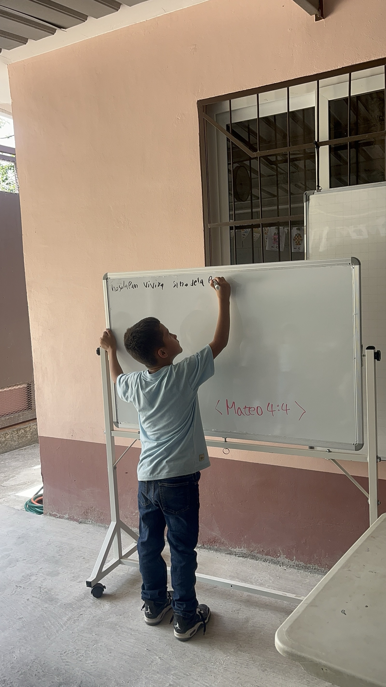

MISSION FOR HONDURAS · 2026–2036 사역계획서
한 아이에서
온두라스까지
Zapotal, 다음 세대를 위한 꿈의 공간
"보라 내가 새 일을 행하리니 이제 나타낼 것이라 …
내가 광야에 길을 사막에 강을 내리니" — 이사야 43:19

화이트보드에 말씀을 적는 Zapotal의 아이 — 마태복음 4:4"보라 내가 새 일을 행하리니 이제 나타낼 것이라 …
내가 광야에 길을 사막에 강을 내리니" — 이사야 43:19

화이트보드에 말씀을 적는 Zapotal의 아이 — 마태복음 4:4